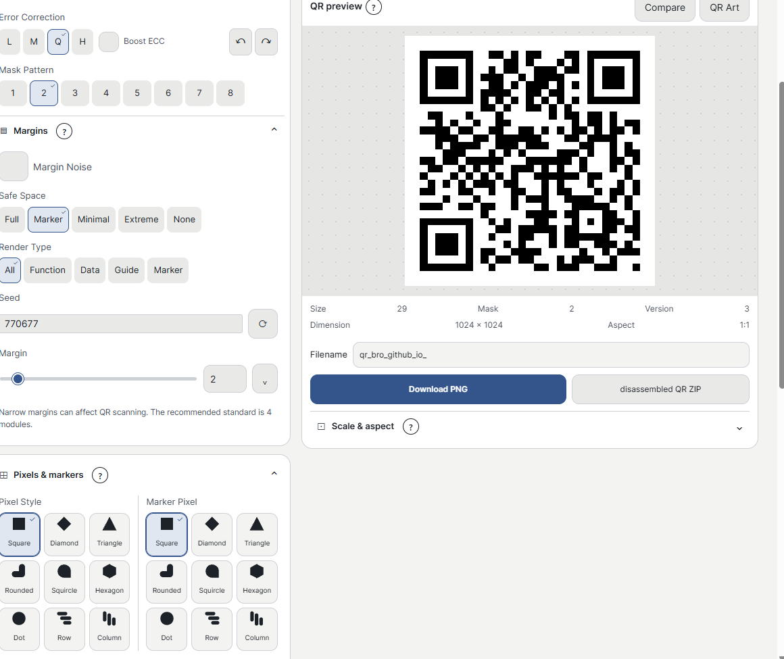
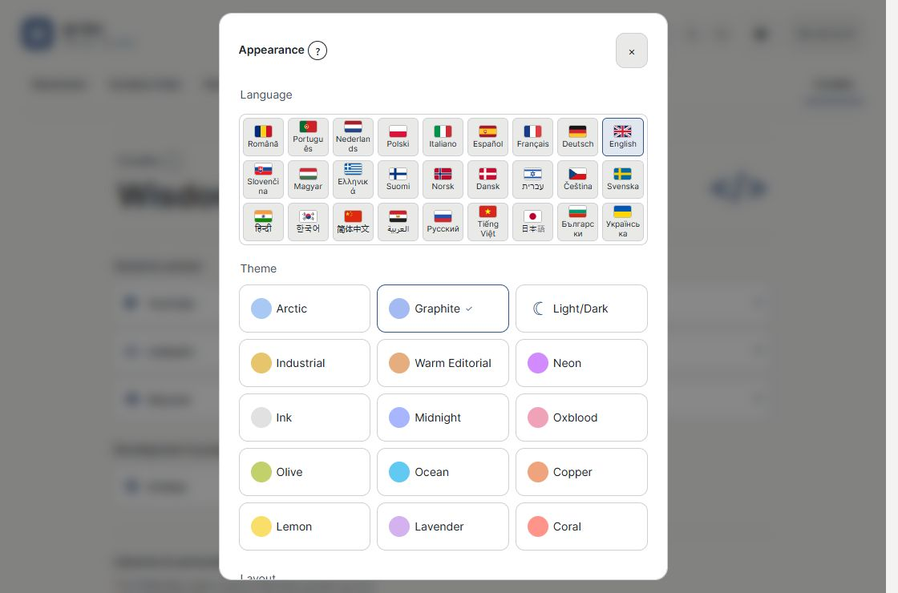

Οδηγός χρήσης
Προτεινόμενα βήματα
Ανοίξτε τους συνδέσμους επαφών για να δημιουργήσετε έναν σύνδεσμο ή αντιγράψτε το κείμενο που θέλετε να περιέχει ο κωδικός QR σας.

Ανοίξτε τη γεννήτρια και επικολλήστε τον σύνδεσμο ή το κείμενό σας στο πεδίο περιεχομένου QR.

Δοκιμάστε διαφορετικά περιθώρια, χρώματα και σχήματα μέχρι να σας αρέσει ο κώδικας στην προεπισκόπηση.

Κάντε κλικ στο μεγάλο κουμπί Λήψη PNG κάτω από την προεπισκόπηση για να αποθηκεύσετε τον κωδικό QR ως εικόνα.

Υπάρχουν πολλές περισσότερες επιλογές για τις οποίες δεν έχω τραβήξει στιγμιότυπα οθόνης ούτε ανέβασα, αλλά καταλαβαίνετε.
Κανείς δεν με πληρώνει για αυτό και ο σκύλος μου περίμενε μια ώρα για μια βόλτα.
Μια μέρα θα πάω στα υπόλοιπα.
Γεννήτρια
Άνοιγμα σε QR BRO ↗Εισαγάγετε μια διεύθυνση URL ή κείμενο. Η προεπισκόπηση ενημερώνεται καθώς επεξεργάζεστε. Κατεβάστε ένα PNG για μια μεμονωμένη εικόνα ή ένα ZIP για ξεχωριστά επίπεδα QR.

περιεχόμενο QR
Επικολλήστε το πλήρες κείμενο που θέλετε να διαβάσει ένας σαρωτής.
Κωδικοποίηση
Επιλέξτε διόρθωση σφάλματος και μοτίβο μάσκας. Η υψηλότερη διόρθωση αφήνει περισσότερο χώρο για την ανάκτηση κατεστραμμένων δεδομένων, αλλά μπορεί να αυξήσει την πυκνότητα.
Περιθώρια
Ρυθμίστε το αθόρυβο περίγραμμα στις μονάδες. Τέσσερις καθαρές μονάδες βοηθούν τους σαρωτές να εντοπίσουν τον κώδικα. Ο θόρυβος, ο ασφαλής χώρος και τα στοιχεία ελέγχου στρώσης αλλάζουν τον περιβάλλοντα σχεδιασμό.
Pixel & δείκτες
Επιλέξτε σχήματα μονάδων και στυλ τους γωνιακούς δείκτες ξεχωριστά. Σαρώστε το αποτέλεσμα μετά από αλλαγή σχήματος.
Χρώματα
Επιλέξτε τα ανοιχτά και σκούρα χρώματα ή αντιστρέψτε τα. Διατηρήστε αρκετή αντίθεση για σάρωση.
Προηγμένες επιλογές
Επεκτείνετε αυτήν την ομάδα για να ελέγξετε την πυκνότητα, τις διαστάσεις και την προοπτική QR.
Έκδοση και μέγεθος pixel
Περιορίστε το εύρος έκδοσης QR και προσαρμόστε το μέγεθος των εικονοστοιχείων. Εάν το περιεχόμενο υπερβαίνει το όριο έκδοσης, συντομεύστε το ή αυξήστε το μέγιστο.
Μετασχηματίζω
Προσαρμόστε την προοπτική σε κάθε άξονα. Επαληθεύστε την εξαγόμενη εικόνα μετά την εφαρμογή παραμόρφωσης.
Κλίμακα & όψη
Ρυθμίστε το ζουμ προεπισκόπησης, το μέγεθος του καμβά, τις αναλογίες και τη διαφάνεια. Χρησιμοποιήστε τα στοιχεία ελέγχου JSON για εξαγωγή ή επαναφόρτωση ρυθμίσεων με δυνατότητα επεξεργασίας.
Σύνδεσμοι επικοινωνίας
Άνοιγμα σε QR BRO ↗Επιλέξτε μια πλατφόρμα πρώτα. Εισαγάγετε τον παραλήπτη που ζητήσατε, όπως έναν διεθνή αριθμό τηλεφώνου, όνομα χρήστη ή email. Προσθέστε ένα μήνυμα όπου υποστηρίζεται. Για ομαδικά πεδία email, διαχωρίστε τους παραλήπτες με κόμματα ή κενά. Αντιγράψτε τον σύνδεσμο που δημιουργήθηκε ή επιλέξτε Δημιουργία QR για να τον ανοίξετε στη γεννήτρια.

Επαλήθευση
Άνοιγμα σε QR BRO ↗Μεταφορτώστε, αποθέστε ή επικολλήστε μια εικόνα QR. Διαβάστε το αποκωδικοποιημένο περιεχόμενο και την κατάσταση σάρωσης. Ελέγξτε την αντίθεση, την ήσυχη ζώνη και την πυκνότητα και, στη συνέχεια, αντιγράψτε το αποτέλεσμα ή στείλτε το στη γεννήτρια.

Διαφορές εικόνας
Ελέγξτε ποια pixel άλλαξαν μεταξύ της αρχικής και της επεξεργασμένης εικόνας.
Ρυθμίσεις εικόνας
Δοκιμάστε να αλλάξετε το μέγεθος, την κλίμακα του γκρι, την αντίθεση, τη φωτεινότητα ή το θάμπωμα. Κλειδώστε μια ρύθμιση για να τη διατηρήσετε κατά τη διάρκεια τυχαίων προσπαθειών. Συγκρίνετε τη νέα σάρωση με την αρχική.
Συγκρίνετε
Άνοιγμα σε QR BRO ↗Ανεβάστε μια εικόνα-στόχο και ένα QR πηγής ή χρησιμοποιήστε την έξοδο της τρέχουσας γεννήτριας ως πηγή. Η τρίτη προεπισκόπηση χαρτογραφεί τις διαφορές μεταξύ των μονάδων. Μπορείτε να μεγεθύνετε είτε την είσοδο και να αντιγράψετε το αποκωδικοποιημένο κείμενό της.

Επεξεργασία στόχου
Προσαρμόστε την κλίμακα του γκρι, την αντίθεση, τη φωτεινότητα, το θάμπωμα και το pixelation πριν από τη σύγκριση.
Ευθυγράμμιση πλέγματος
Χρησιμοποιήστε τον στόχο ή την πηγή ως αναφορά κοινόχρηστου πλέγματος. Επιλέξτε ανεξάρτητη στοίχιση όταν οι εικόνες έχουν διαφορετικά περιθώρια. Τα χειροκίνητα χειριστήρια προσαρμόζουν το μέγεθος του πλέγματος και το περιθώριο.
Εμφάνιση πλέγματος
Ενεργοποιήστε το πλέγμα, επιλέξτε τις εικόνες στις οποίες εμφανίζεται και προσαρμόστε το χρώμα και την αδιαφάνεια της γραμμής.
Ρυθμίσεις επικάλυψης
Ενεργοποιήστε την επικάλυψη και προσαρμόστε την ανάμειξη και την αδιαφάνεια για να συγκρίνετε επικαλυπτόμενες λεπτομέρειες.
Ρυθμίσεις διαφοράς
Επιλέξτε μια λειτουργία χρώματος για αγώνες, τύπο διαφοράς ή ένταση. Επιλέξτε μονάδες για πιο προσεκτική επιθεώρηση. Αναδιάταξη των επιλογών ή αλλάξτε τα χρώματα αναγνώρισης τους.
Σύγκριση στατιστικών
Διαβάστε τον αριθμό αναντιστοιχιών και τη μέση φωτεινότητα για να αξιολογήσετε την επιλεγμένη σύγκριση.
Ρυθμίσεις διόρθωσης
Προσαρμόστε τη διόρθωση, κάντε προεπισκόπηση, επισημάνετε τις διαφορές και πραγματοποιήστε λήψη της εικόνας ή της μάσκας διόρθωσης.
Ο λογαριασμός μου και αποθήκευση κουλοχέρηδων
Άνοιγμα σε QR BRO ↗Χρησιμοποιήστε τα αριθμημένα κουμπιά για εναλλαγή μεταξύ δέκα τοπικών έργων. Συνδεθείτε για συγχρονισμό μεταξύ συσκευών. Δημιουργήστε έναν λογαριασμό με email και κωδικό πρόσβασης και επιβεβαιώστε μέσω του συνδέσμου email ή του κωδικού. Το Google και το GitHub είναι επίσης διαθέσιμα. Στο λογαριασμό σας μπορείτε να επεξεργαστείτε το προφίλ σας, να διαχειριστείτε μεθόδους σύνδεσης και έλεγχο ταυτότητας δύο παραγόντων, να ελέγξετε τις διενέξεις συγχρονισμού, να δημιουργήσετε αντίγραφα ασφαλείας των ρυθμίσεων ή να αποσυνδεθείτε.

Εμφάνιση και γλώσσα
Άνοιγμα σε QR BRO ↗Ανοίξτε το κουμπί εμφάνισης δίπλα στις υποδοχές αποθήκευσης. Επιλέξτε γλώσσα, θέμα και φωτεινή ή σκοτεινή λειτουργία. Η επιλογή γλώσσας σας απομνημονεύεται σε αυτήν τη συσκευή.

Πιστώσεις
Άνοιγμα σε QR BRO ↗Ανοίξτε τα Credits για συνδέσμους δημιουργών, βιβλιοθήκες και επιβεβαιώσεις. Οι όροι χρήσης συνδέονται στο υποσέλιδο του ιστότοπου.